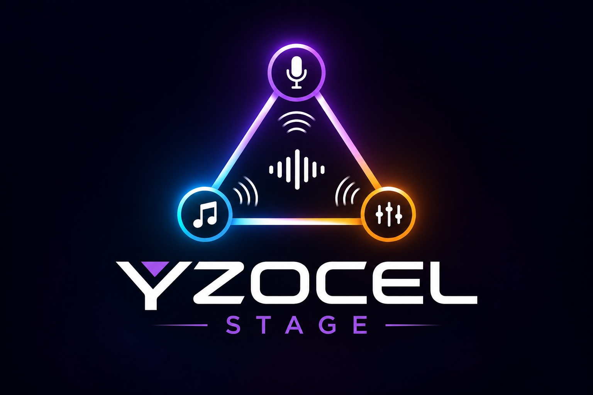
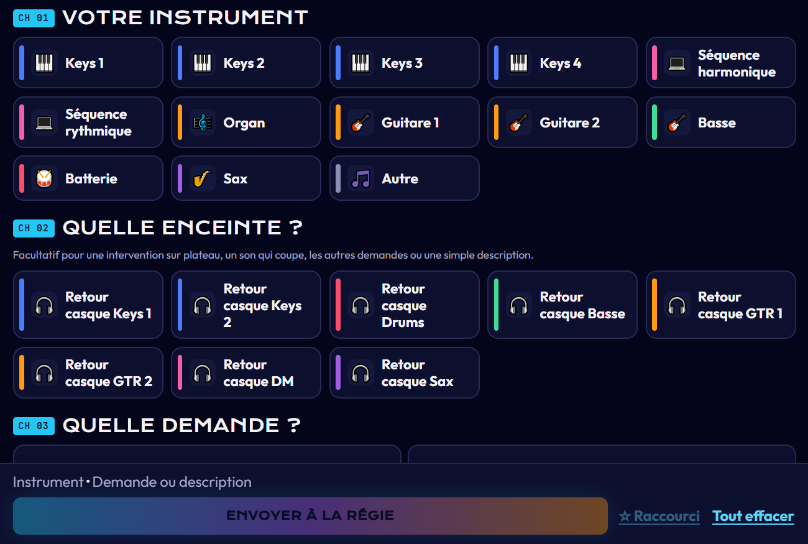
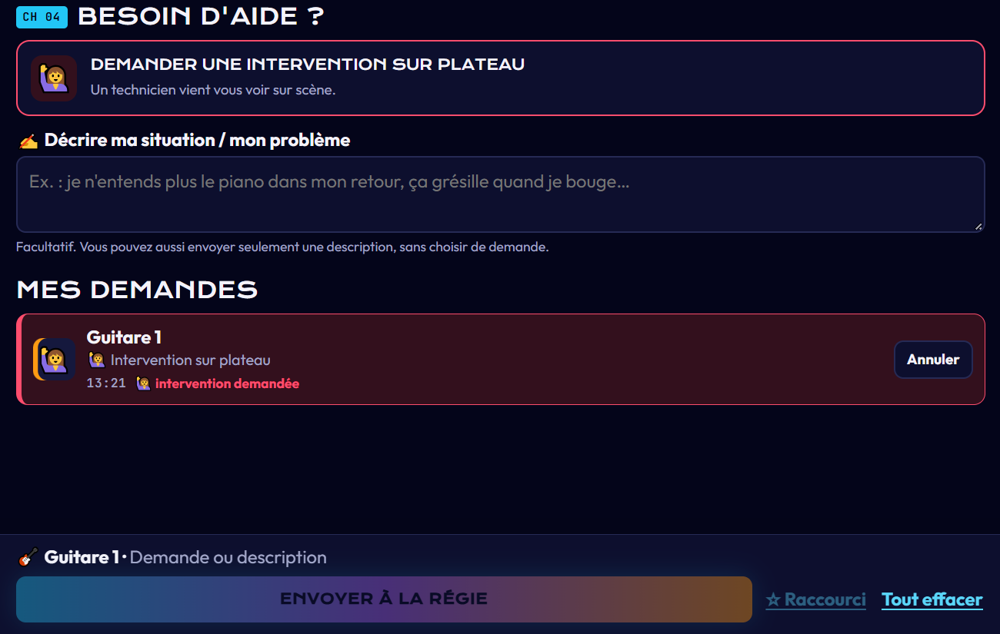
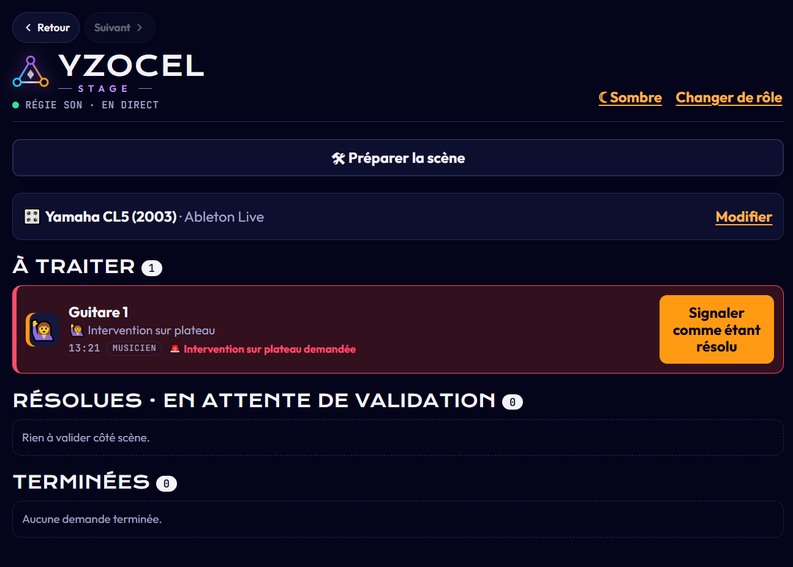

← Retour aux projets
Application & expérience utilisateur / Étude de projet
YZOCEL Stage
Un prototype de communication pensé pour coordonner trois pôles d’une équipe musicale : musiciens, chantres et régie son.

Le contexte
Lors d’une prestation musicale, la coordination entre l’équipe de scène et la régie est essentielle. Le projet YZOCEL Stage explore une communication organisée autour de trois rôles complémentaires.
Mon travail
- Identification des trois groupes d’utilisateurs et de leurs besoins de communication.
- Réflexion sur les parcours d’usage et les interactions entre les trois pôles.
- Conception d’une identité visuelle fondée sur le triangle isocèle et la circulation des messages.
- Prototypage des écrans de sélection de rôle, d’envoi de demandes et de traitement côté régie.
- Développement assisté par IA avec Claude Code : je conçois les fonctionnalités, je pilote la génération du code, puis je teste et ajuste.
Galerie & démonstrations
Captures du prototype d’interface : sélection des rôles, réglages demandés depuis la scène et suivi des interventions côté régie.







Ces écrans documentent un prototype d’interface ; ils ne constituent pas une preuve de déploiement opérationnel, de tests à grande échelle ou d’intégration à une console physique.